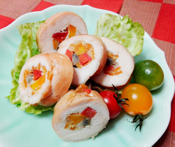

チキンロール
- 調理時間：50分
- （一人当たり）
- カロリー：492kcal
- たんぱく質：35.4g
- 脂質：30.3g
- 炭水化物：15.5g
- 塩分：2.2g


- 鶏肉
- 1枚(350g位)
- ・水
- 50～80cc
- ・塩、砂糖
- 各ひとつまみ
A
- ニンジン（2色）
- 100g
- ごぼう
- 1本(100g)
- オレンジピール（市販）
- 適量
- 塩、コショウ
- 少々


- ゴボウ、ニンジンは皮をむき、10㎝長さの1㎝角に切る。
切ったゴボウは水にさらす。 - 湯を沸かし、塩（分量外）を加える。
ゴボウとニンジンを下茹でする。 - 鶏肉は余分な脂を取り除き、皮目を下にして、厚みのある部分は開いておく。
Aの材料をボウルに入れて、鶏肉を入れて揉み込み、30分以上漬けておく。 - ③の鶏肉を取り出し、塩、コショウを両面にふり、皮目を下にしておく。
ゴボウ、ニンジン、オレンジピールを並べ、芯にして巻き、タコ糸で縛る。 - 180℃に温めたオーブンで中心まで火が通るまで焼く。
竹串を指し、透明な肉汁が出るようなら完成。
チキンロール
ゴボウの産地だった京都の八幡にちなんで名前がついたといわれる八幡巻き。牛肉やウナギを使用するのが一般的ですが、鶏肉で作ってみてはいかがでしょうか？
鶏肉は、牛や豚に比べて低カロリーなのが特徴です。たんぱく質が豊富なのはご存知の通り。それと同時にビタミンB群を多く含みます。ビタミンB群は糖質を分解して、エネルギーに変えるはたらきがあります。年末年始に体重オーバーした方も、低脂肪高たんぱくの鶏肉と補酵素のビタミンを補給して、ダイエットに試みましょう。
鶏肉は部位によって脂質が異なります。また、脂肪分が気になる方は、皮と身の間にある脂肪を取り除いて食べると良いでしょう。